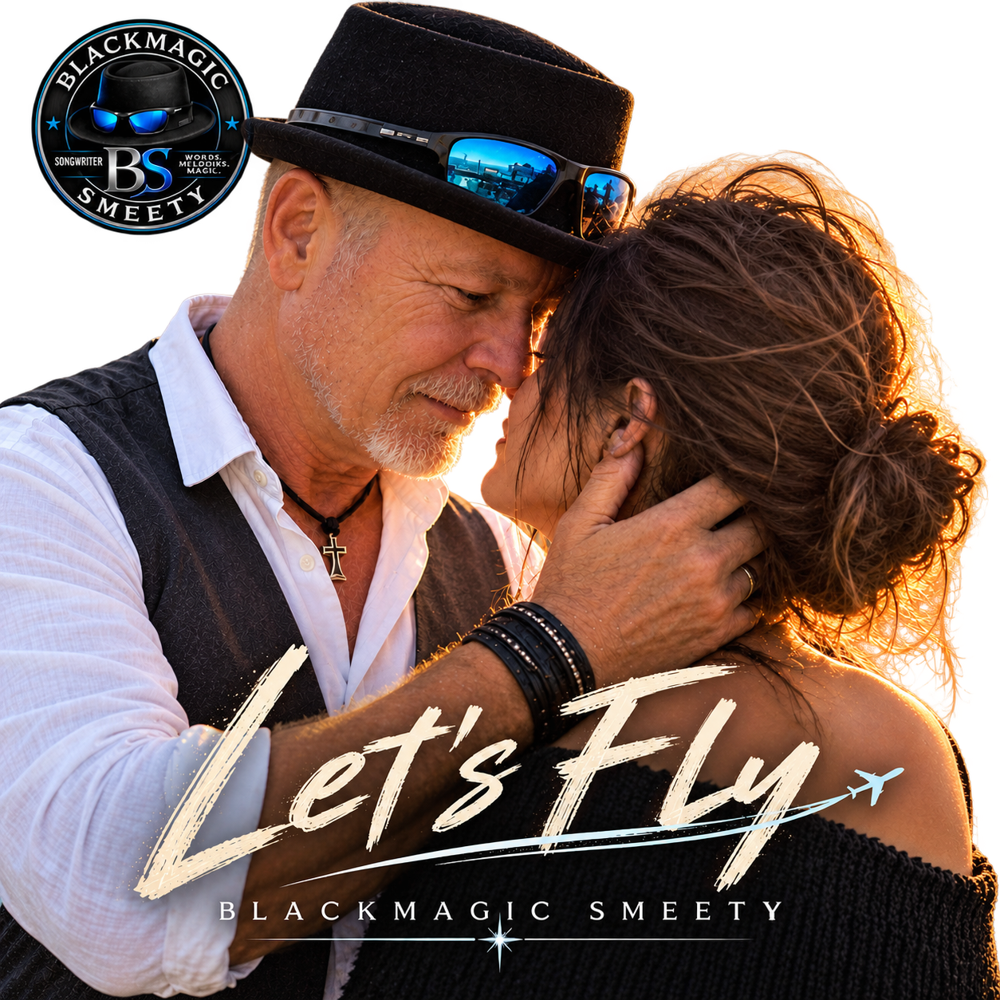

BLACKMAGIC SMEETY · SINGLE · 2026
LET'S FLY
SINGLE · 2026
Ein romantischer Song über Nähe, Vertrauen und gemeinsame Träume.

BLACKMAGIC SMEETY · SINGLE · 2026
SINGLE · 2026
Ein romantischer Song über Nähe, Vertrauen und gemeinsame Träume.